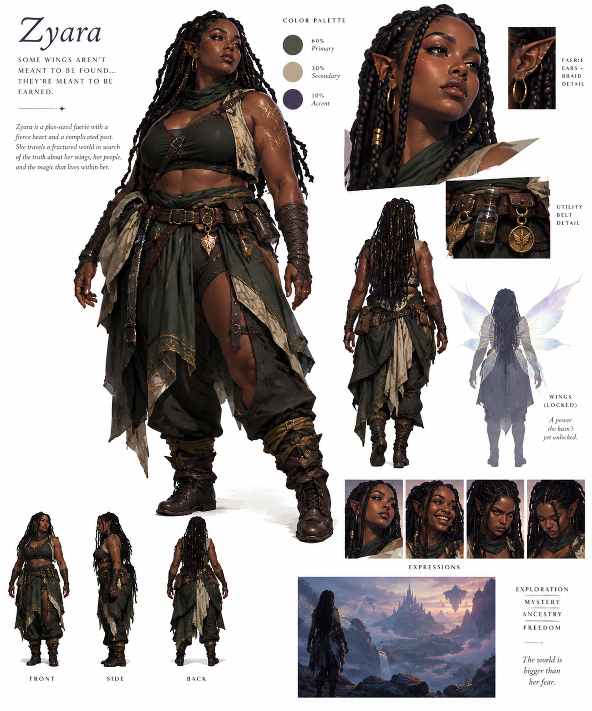
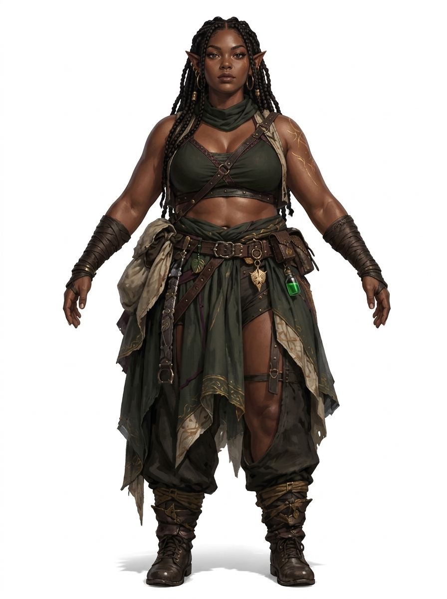
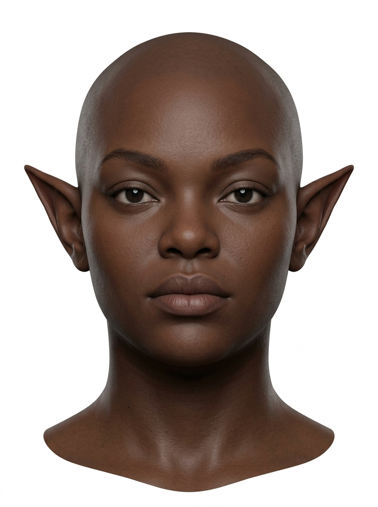
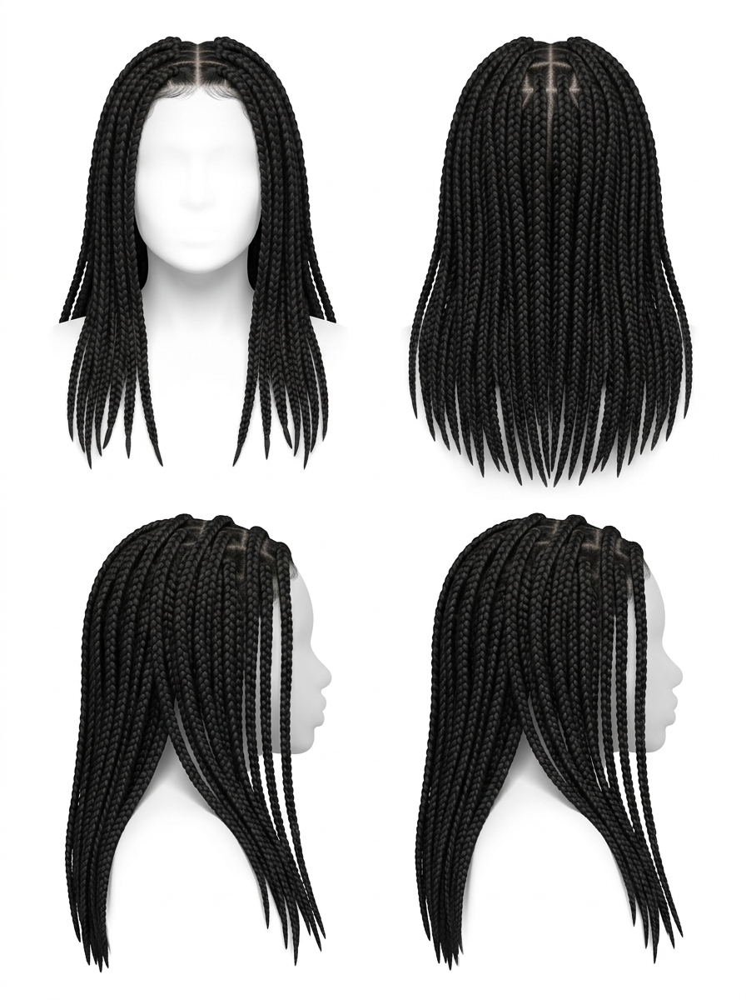
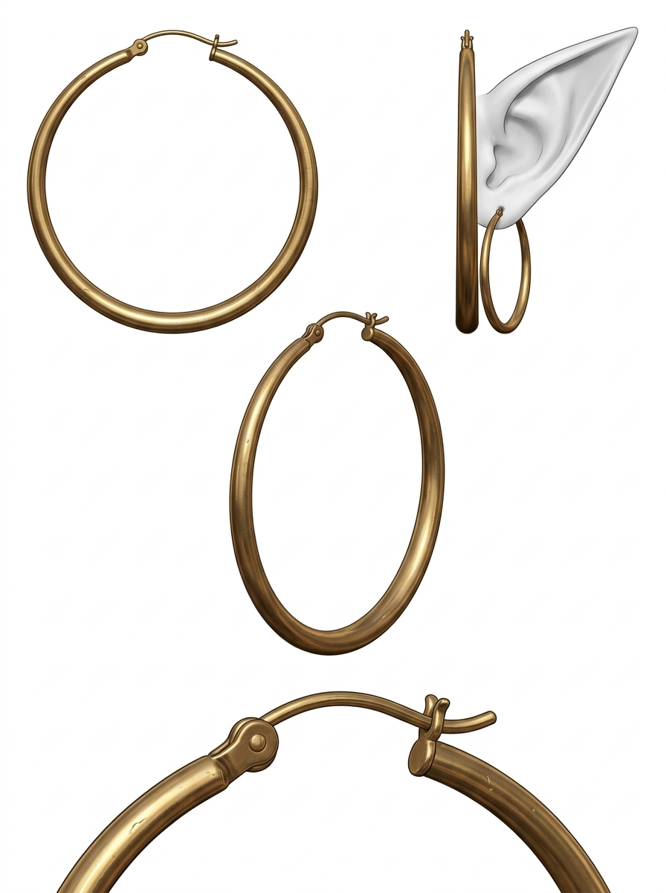
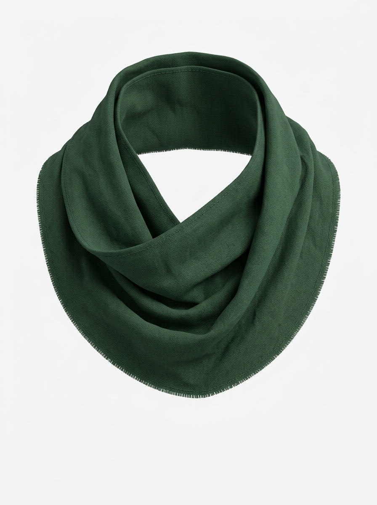
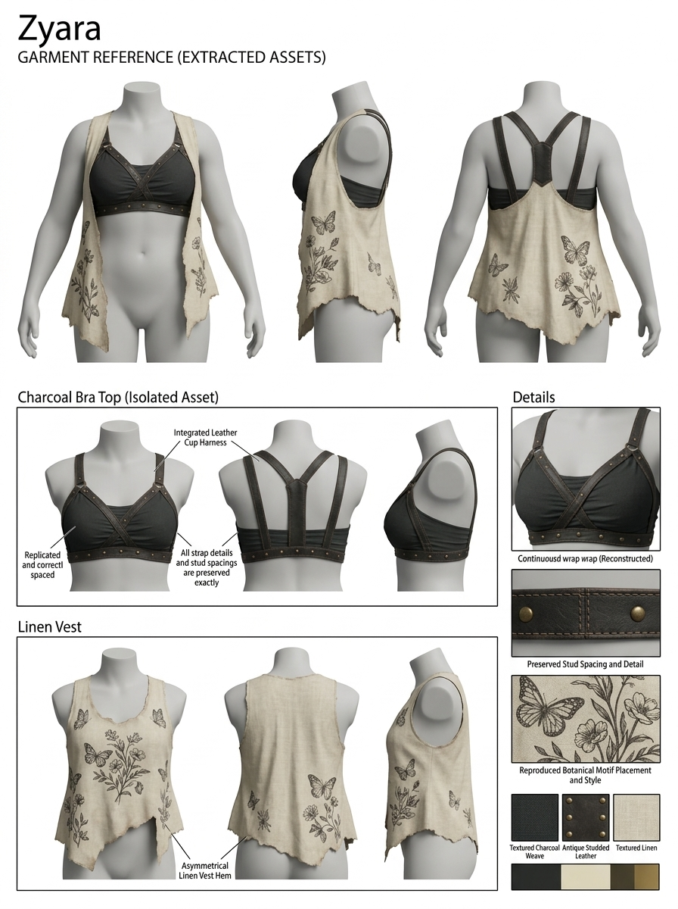
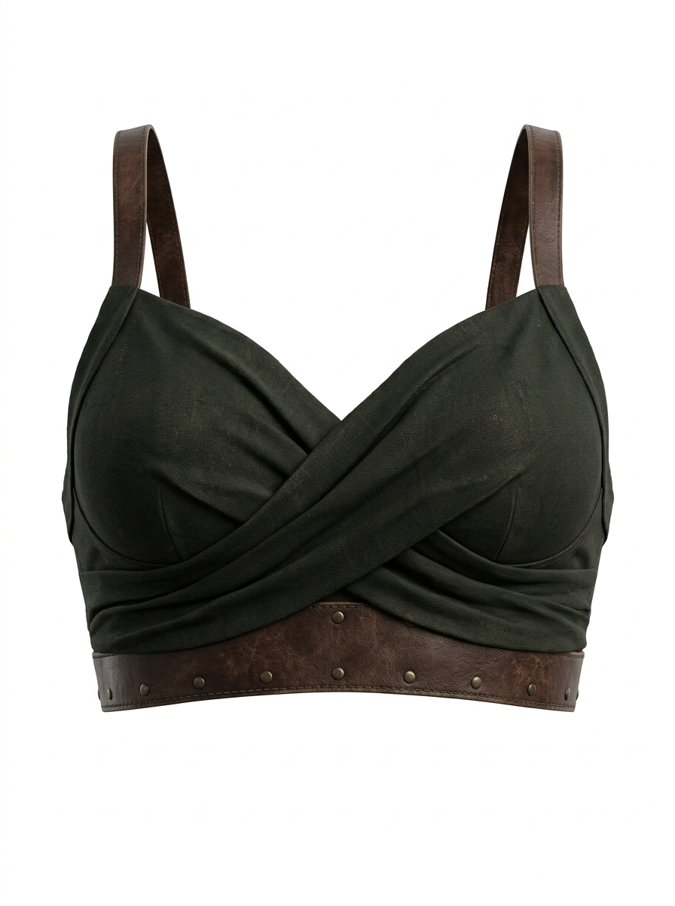
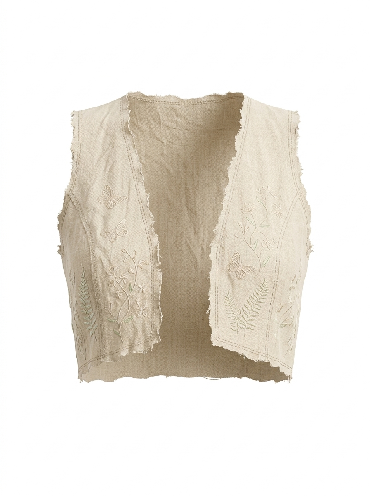
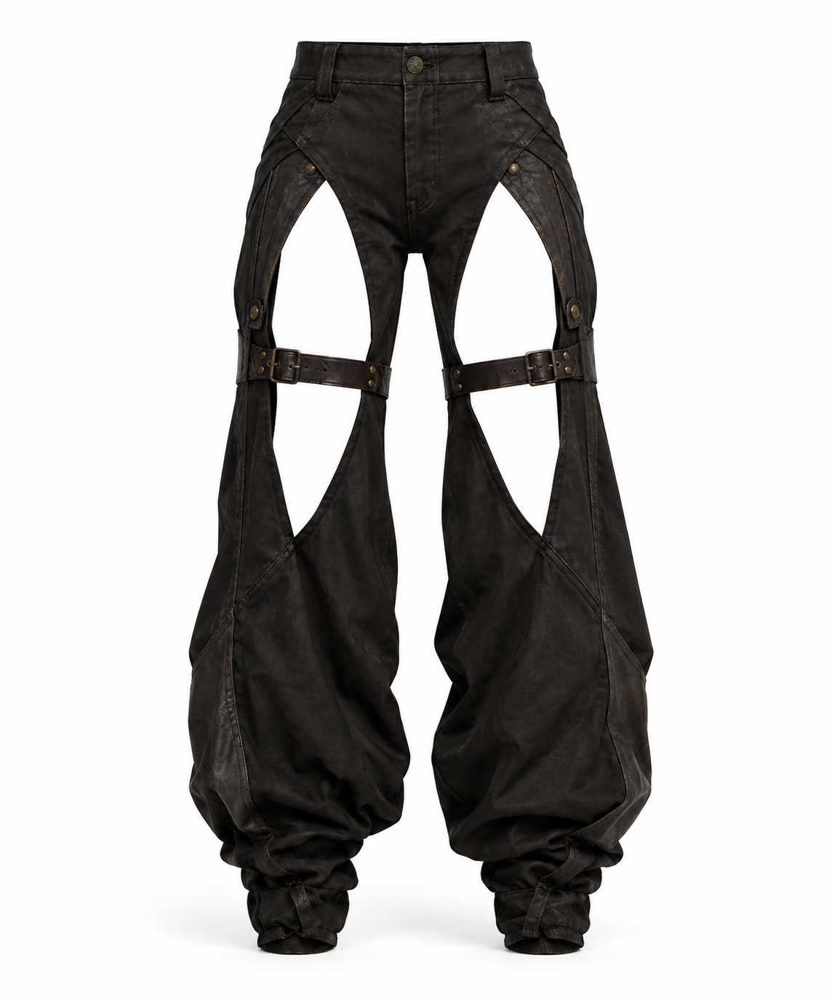

Fate of Fae / characters
Zyara
A faerie with a fierce heart and a complicated past, still searching for the wings she hasn't unlocked.
Status: character sheet complete. A neutral A-pose and isolated part references are ready for 3D modelling or further image work.
01Character sheet
Hero pose, front, side and back turnaround, expressions, wings (locked), belt and ear details, palette and an exploration scene.

02Design notes from the sheet
- Palette: 60% deep olive green (primary), 30% warm sand (secondary), 10% dusk indigo (accent).
- Silhouette: plus-sized build, long braids with gold cuffs, pointed faerie ears with gold hoops.
- Costume: cowl scarf, cropped top under a frayed sleeveless vest, cross straps, wrapped bracers, layered torn skirt over harem pants, wrapped boots.
- Props: utility belt with pouches, a clear potion vial and a gold winged medallion.
- Markings: gold vein-like markings on the shoulder.
- Wings: translucent and iridescent; shown as locked, a power not yet unlocked.
03Model references
A neutral A-pose and isolated parts. The potion vial is clear, as on the character sheet; ignore the green vial in the A-pose when modelling.
A-pose

Head, front

Braids

Gold hoop earring

Cowl scarf

Top

Bra top

Vest

Pants
